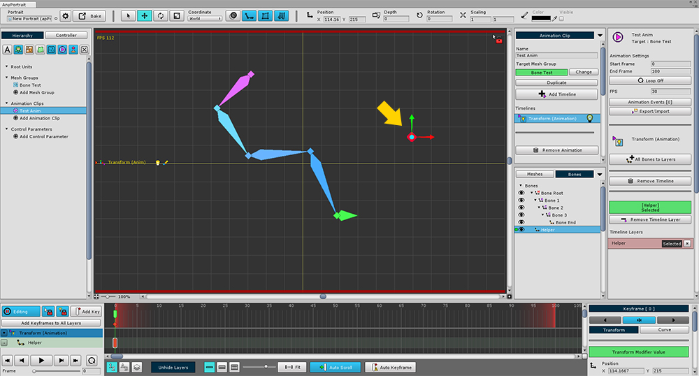
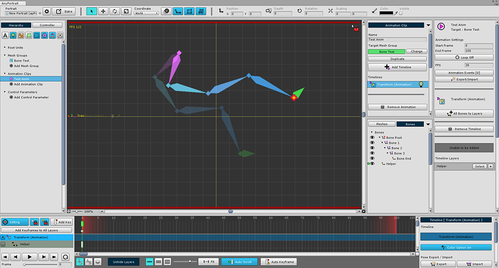
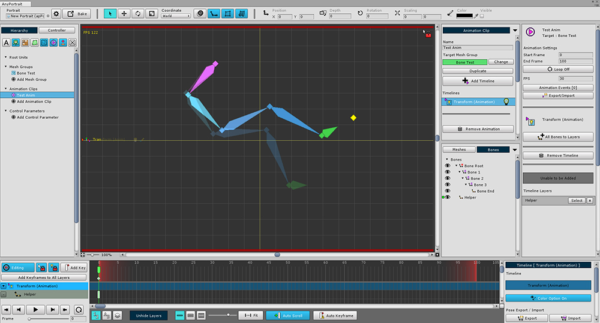
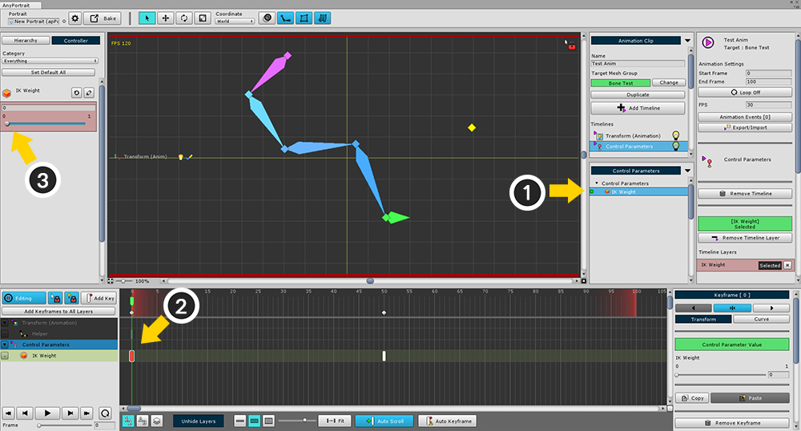
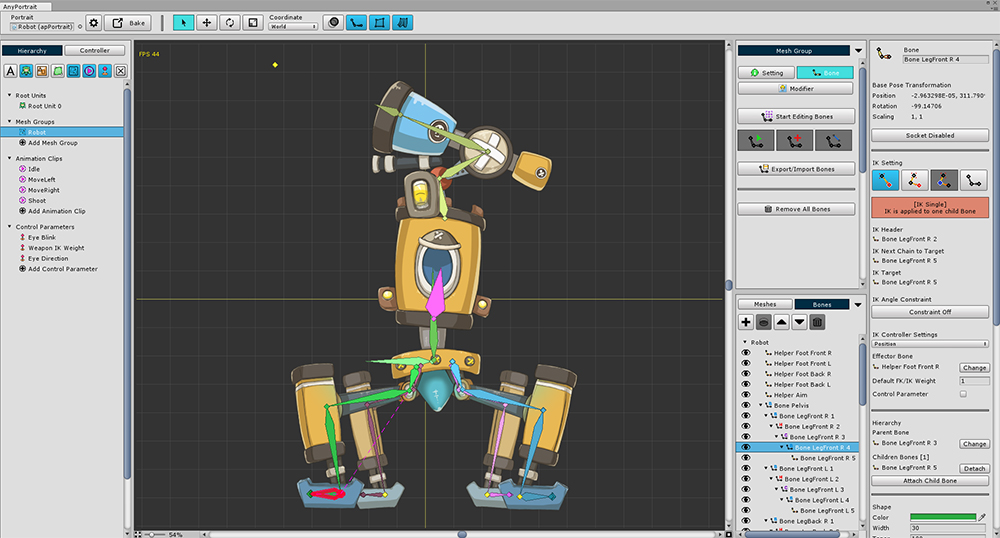

AnyPortrait > マニュアル > IKコントローラ
IKコントローラ
1.1.8
「骨IKチェーン(Bone IK Chain)」が設定されると、外部の骨IKを制御することができます。
この機能により、さまざまなアニメーション効果を与えることができます。
地形に沿って足の高さを変更して、よりリアルな歩行アニメーションを作成することができます。
またはリアルタイムでキャラクターは「プレイヤーが目的の場所」に武器をつかむことができます。
このページでは、「骨のIKコントローラ(Bone IK Controller)」を設定する方法と、ゲームで実際に適用することができる方法について説明します。

前のページで説明したよう骨のIKチェーンを構成するための画面です。

IKを制御するための骨を作成します
(1) 追加の骨を作成し、
(2) 「Helper」として設定します。
「Helper」ボーンの機能に違いはありません。
「Position Controller」の設定とテスト

(1) IKチェーンの「Target」の骨を選択します。
(2) 「IK Controller Settings」を「Position」に変更します。
(3) 「Change」ボタンを押して、先ほど作成した「Helper」の骨を「Effector Bone」に選択してください。
(4) 「Default FK/IK Weight」を0から1に変更します。
「Position Controller」は、IKの「Target」骨の位置が「Effector」骨に可能な近くなるようにIKが動作するモードです。
「Look At Controller」は、IKの「Target」骨が指す方向が「Effector」骨を指すようにIKが動作するモードです。
「Default FK/IK Weight」は、他の重量設定がない場合に適用されるデフォルトの重量値です。
値が1の場合、IKコントローラは100％適用されます。 値が0.5の場合、50％のみが適用されます。

IKコントローラが動作するかをテストしてみましょう。
(1) 「Transform (Animation)」モディファイアを追加します。
(2) アニメーションを作成し、メッシュグループを選択し、「Transform (Animation)」タイムラインを追加します。
(3) 「Helper」骨を選択して、タイムラインのレイヤーに登録します。
(4) キーフレームを作成し位置を変更します。

編集モードを終了すると、IKチェーンが「Helper」骨に到達するように移動することを見ることができます。
(上記の画像は編集モードのようですが、IKコントローラは編集モードでは機能しません。)
「Look At Controller」の設定とテスト

IKチェーンの「Target」骨を選択し、「IK Controller」タイプを「Look At」に変更します。
「Look At」方式は、各骨組みが少し動くようにしてIKチェーンの形状を大きく変更せずに、ターゲットを見ることです。

上作成されたアニメーションを選択すると、IKチェーンが「Position」方式とは異なり、「Helper」骨に到達していないことを見ることができます。
代わりに、「Target」骨は「Helper」骨を指し、これは骨が多く回転しないことを意味します。
IKチェーンなく「Look At Controller」を適用する &RC
「Look At Controller」は、「Position Controller」とは異なるIKチェーンがない状態でも動作します。
子骨がないか、IKチェーンが「Disabled」状態である骨の「Look At Controller」を設定すれば、単一の骨を対象にIKが計算されます。
IKチェーンなしで動作する機能は、v1.1.8から適用されます。
編集モードでIKコントローラーの結果をプレビュー

編集モードでは、複合的にモディファイアを変更する必要があるため、IKコントローラは機能しません。
ただし、結果を事前に確認することはできます。
(1) 「表示メニュー」を開きます。
(2) 「Edit Mode Options > Preview Calculated Bones」をオンにします。 （ショートカット： Alt+B ）
(3) IKコントローラの結果 適用した結果を黄色のアウトラインとして表示します。
制御パラメータでIKコントローラの重量を調節

「アニメーションされるFK方式」と「IKコントローラで制御されているIK方式」は、重みを利用して、同時に使用することができます。
ゲームの実行中にアニメーションが必要な場合やIKが必要な場合がありますので、自然に切り替える必要があります。
このときの制御パラメータを使用して、いつでも簡単に重みを変更することができます。
(1) 制御パラメータを作成します。私は「IK Weight」という名前で、それを作成しました。
(2) 「Type」を「Float」に設定します。
(3) 「Range」を「Minは0、Maxは1」に設定してください。

(1) 「Target」骨を選択します。
(2) 「IK Controller Settings」のプロパティで「Controller Parameter」を確認し、「Change」ボタンを押します。
(3) 作成した制御パラメータを選択します。
IKコントローラの結果は、制御パラメータの値(0~1)に基づいて反映されます。
アニメーションやスクリプトを使用して制御パラメータの値を制御することができます。
(この状態で「Default FK/ IK Weight」は使用されません。)

次に、制御パラメータの値によってアニメーションがどのように変化するかを見てみましょう。
(1) 前に作成したアニメーションを選択します。
(2) 「Add Timeline」ボタンを押して、(3) 「Control Parameters」タイムラインを追加します。

(1) 作成した制御パラメータを選択して、タイムラインのレイヤーに登録します。
(2) キーフレームを作成し (3) の制御パラメータの値を0に設定します。

(4) 次のキーフレームを作成して選択します。
(5) 制御パラメータの値を1に設定します。

IKが適用される比率は、制御パラメータの値によって変化することがわかります。
IKコントローラをゲームに適用する例
第7回デモシーンは、IKコントローラを搭載したサンプルゲームです。 (デモサンプルゲームを試してみてください。)
ここでは、このゲームでIKがどのように動作するかを簡単に説明します。

サンプルゲームに登場する四足歩行ロボットです。
このロボットは、プレーヤーの後ろに爆弾を投げ、手助けをします。
ロボットは頭の上のロボットアームで爆弾を発射する。
ロボットは4本の足で左右に歩きます。

4本の足は、それぞれのIKチェーンで構成されます。
足が地面に届くところに「Helper」骨を生成しました。
この「Helper」骨はIKコントローラの「Effector」骨に接続されて、「Position」タイプに設定されます。
「Helper」骨は「Helper Foot Front R」、「Helper Foot Front L」、「Helper Foot Back R」と「Helper Foot Back L」と命名されます。

爆弾を発射するロボットアームは、IKチェーンで作られています。
IKチェーンに属していない最後の骨はソケットです。
爆弾ターゲットアニメーション「Helper Aim」というスケルトンを追加し、これをIKコントローラに接続しました。
IKコントローラのタイプは、「Look At」です。

これは、ゲームでIKコントローラを使用する大まかな方法です。
1. 地形の認識と足の高さの調整
リアルタイムで足の位置よりもやや上から下に「Raycast」を試みます。
「Raycast」プロセスが成功した場合、「Helper」骨を「Ray」が地面に到達した位置に移動します。
この時、「Helper」骨を強制的に動かすと、歩行アニメーション全体でロボットの足が地面から離れません。
apPortraitの「SetBonePositionConstraintBySurface」関数を使用すると、足の高さが地形に応じて変更され、歩行アニメーションが正常に動作することができます。
「SetBonePositionConstraintBySurface」機能に必要な「基本サーフェスの位置」、「現在のサーフェスの位置」と「最小/最大サーフェスの位置」は、シーンでの他の「Transform」を使用して設定し、高さの値を取得します。

Unityシーンでパラメータとして使用する位置の値を取得するには、 「GameObjects」を作成し、 「Transform」情報を参照します。
1. 「Raycast」を試みるための出発点
2. 「SetBonePositionConstraintBySurface」関数のパラメータとしての 「Max Surface Position (最大表面位置)」
3. 「SetBonePositionConstraintBySurface」関数のパラメータとしての 「Default Surface Position (基本の表面位置)」
4. 「SetBonePositionConstraintBySurface」関数のパラメータとしての「Min Surface Position (最小表面位置)」
RaycastHit2D RaycastHit_RobotFootR = Physics2D.Raycast(FootRaycast_R.position, new Vector2(0.0f, -1.0f), 30);
if (RaycastHit_RobotFootR && RaycastHit_RobotFootR.collider != null)
{
robot.SetBonePositionConstraintBySurface( "Helper Foot Front R",
FootPosY_Default.position.y,
RaycastHit_RobotFootR.point.y,
FootPosY_Min.position.y,
FootPosY_Max.position.y,
ConstraintSurface.Ysurface,
Space.World);
}

2. 自然ロボットアームを制御して向けること
「Helper Aim」の骨をゲームで使用する照準点の位置に移動します。
「Look At」IKコントローラが有効にされたので、もはや処理する必要がありません。
robot.SetBonePosition("Helper Aim", aimPosition, Space.World);